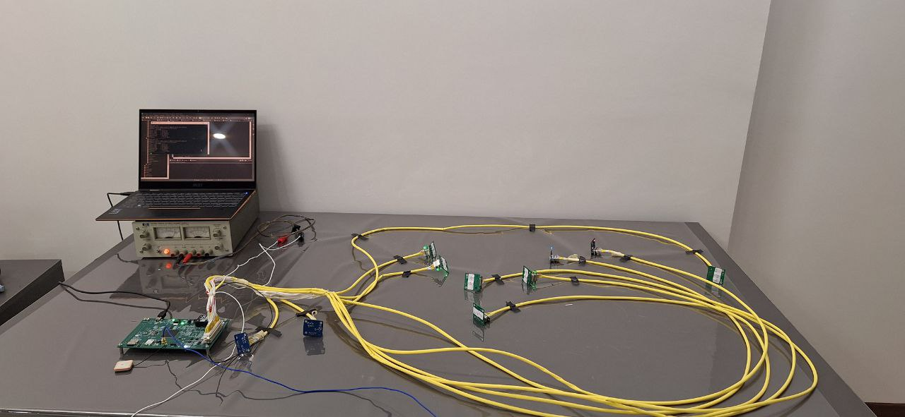
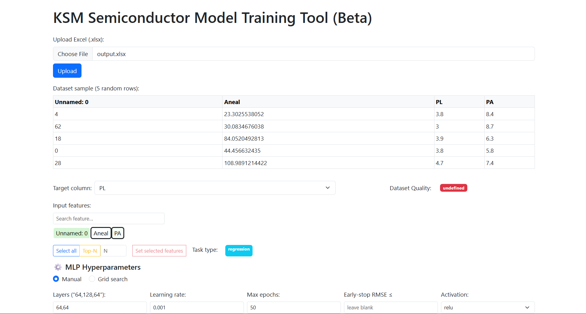

Projects in this Layer

STM32H743 FreeRTOS Datalogger
Paid contract project. 6-task priority-scheduled RTOS firmware on STM32H743 (480 MHz). 100 Hz IMU via PCA9548A mux, 5 Hz GPS, 70-byte binary packets, raw SD sector writes with triple-redundant write pointers, RS232 telemetry. Evolved from V1→V5 after real field failures.

Semiconductor Process Modeling WebApp
Browser-based tool for proton-exchange (LiNbO₃) and thermal oxidation (Si) process modeling. HTML/JS frontend + Python (Flask) backend. Accepts Excel batch input or pyserial live sensor feed; real-time Deal-Grove and diffusion model plots.

Wireless Identity Recognition System
Dual-threaded Python client: face recognition (face_recognition library, 128-D encoding) + 9-class gesture recognition (MediaPipe Hands, 21-landmark). TCP → ESP32 server over Wi-Fi. ESP32 dispatches GPIO/relay/UART actions based on received identity + gesture.